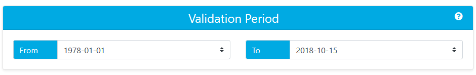
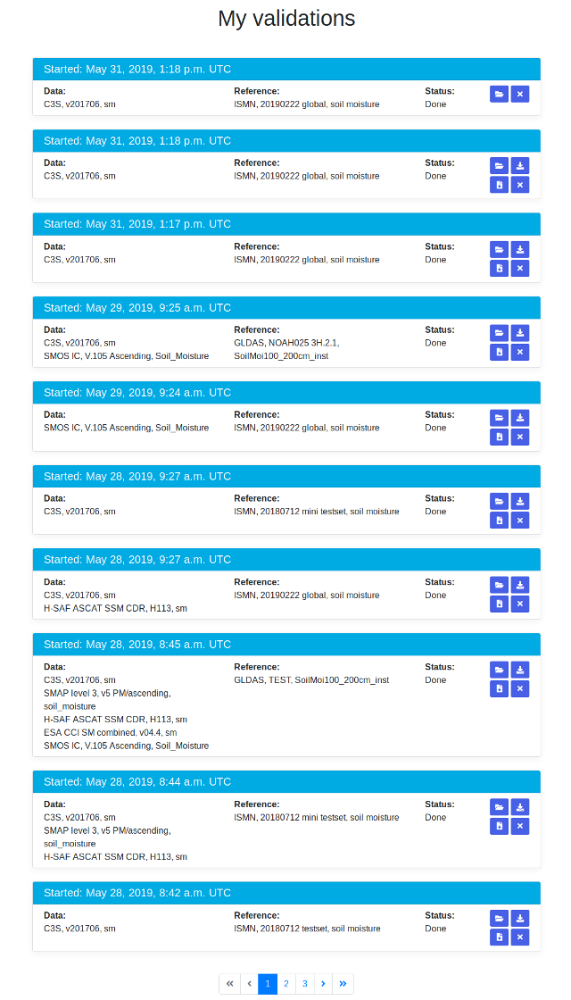
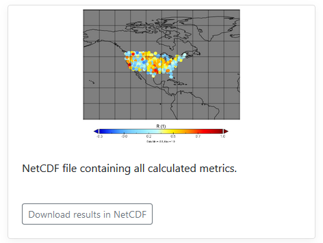

Validation
Results
Results list
Validate Page
Step 1 - Choose the data you would like to validate - including the dataset name, the version of the dataset, and the soil moisture variables provided in the dataset. More details on the supported datasets can be found here.
Step 2 - Choose the criteria by which you would like to filter this dataset. The filters available depend on the data contained within the chosen dataset. For example, you can filter the C3S data to include only data with no inconsistencies detected (flag = 0). Details of the filter options provided for each dataset are given on the supported datasets page here. You can also hover your mouse pointer over the question mark next to a filter to get a short explanation.

Step 3 - You can add additional datasets using the + button. 5 datasets is the maximum allowed. To define the details of each additional dataset repeat steps 1 and 2 above.
Step 4 - Choose the reference dataset you would like to use for the validation including the dataset name, the version of the dataset, and the soil moisture variables provided in the dataset. More details on the supported datasets can be found here.
Step 5 - Choose the criteria by which you would like to filter the reference data prior to running the validation. The filters available depend on the data contained within the chosen dataset. For example, you can filter the ISMN data to include only data points where the soil_moisture_flag is "G" for "good". Details of the filter options provided for each dataset are given on the supported datasets page here. You can also hover your mouse pointer over the question mark next to a filter to get a short explanation.

Step 6 - Choose the date range over which the validation should be performed. Accepted formats are: YYYY*MM*DD or DD*MM*YYYY where * can be any of ".", "/" or "-".
Step 7 - Choose how the data (or reference) will be scaled before metrics calculation. The data can be scaled to the reference (default) or vice versa. Note that scaling to data is only available if only one dataset was selected. Multiple datasets will be forced to scale to reference. The scaling method determines how values of one dataset are mapped onto the value range of the other dataset for better comparability.

Step 8 - Optionally name your validation results to make it easier to identify it in the list of all your validations.

Step 9 - Run the validation process. You'll be notified via e-mail once it's finished. You don't need to keep the results window (or even your browser) open for the validation to run. The email will contain a link to your results.
My Validations - Results List Page
The list shows all your processed validations, including the currently running ones, sorted by date (latest first). Each validation has some icons on the right side. The folder icon allow to view the results page of your selected validation. The X icon will allow to remove the result. The icon with the arrow pointing downward will allow you to download all the graphs. The icon with the page will allow you to download the results as a NetCDF file.
Validation Results Page
The following metrics are calculated during the validation process:
| Name | Description |
|---|---|
| bias | Average Error |
| RMSD | Root-mean-square deviation |
| R | Pearson correlation coefficient |
| p_R | p-value for pearson correlation coefficient |
| ρ | Spearman rank correlation coefficient |
| p_ρ | p-value for spearman rank correlation coefficient |
| τ | Kendall rank correlation coefficient |
| p_τ | p-value for kendall rank correlation coefficient |
| nobs | Number of valid observations per grid point |
| bias | Average Error |
Once the validation process is finished, a short summary of the validation run is shown on the results page.

You can view boxplots of the distributions of the calculated metrics across locations by selecting the metric from the dropdown button below the plot. Click on the plot to enlarge it. You can also download all the boxplots in a zipfile by clicking on the Download button.

Finally, you can download your validation results in a single netcdf file.
If you want to email us to send comments, report errors, or ask questions, you can do so at qa4sm (at) awst.at .
Back to top